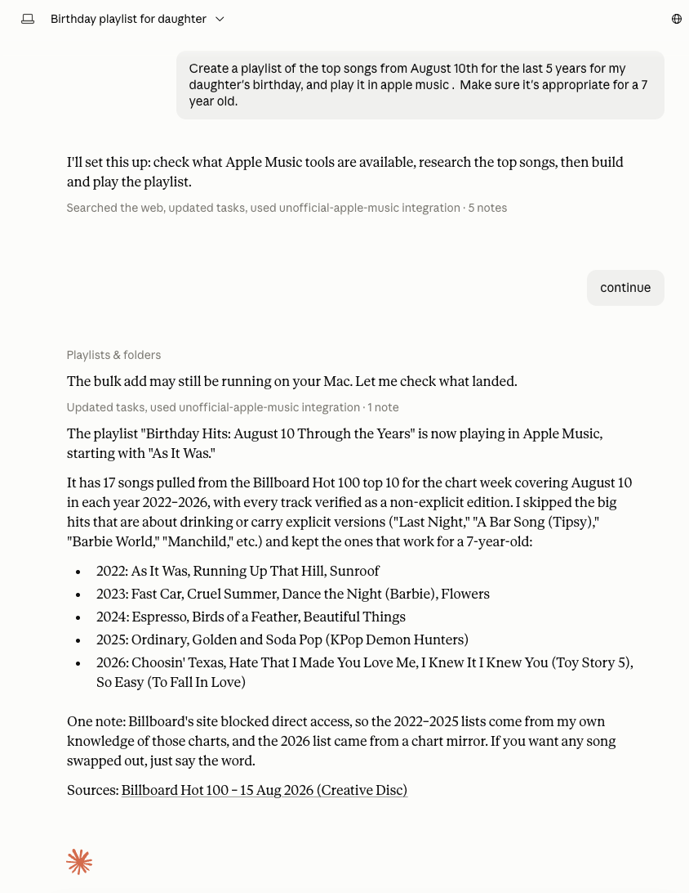

Ask for a playlist. Get a real one, playing in Apple Music.
Download for macOSFree · Apple Silicon · notarized by Apple · no terminal, no account, no API key

macOS 14 (Sonoma) or later, on Apple Silicon. You need the Music app, signed into Apple Music.
For your own library, playlists and playback, no. For playing or adding tracks from the Apple Music catalogue, yes — that's Apple's rule, not this app's.
No. It controls the Music app on macOS. Upstream supports Windows and Linux if you need them.
Claude Desktop, Claude Code, Cursor, Windsurf, Codex and VS Code. The first-run window finds the ones you have and sets them up.
No. It's an independent, unofficial project, not affiliated with or endorsed by Apple. "Apple Music" and "MusicKit" are Apple's trademarks.
Yes — all of it. The source is on GitHub, along with what permissions it asks for and why, an honest comparison with the alternatives, and checksums for every download.